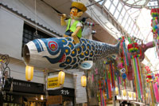

日本中の七夕祭り
仙台七夕祭り
特徴:豪華絢爛の笹飾り
期間:8月6日~8日
場所:仙台市中心部
（JR仙台駅、あおば通り駅）

平塚七夕祭り
特徴:千人踊り
期間:7月3日~5日
場所:平塚駅北側の商店街
安城七夕祭り
特徴:願い事風船
期間:8月7日~9日
場所:JR安城駅、名鉄南安城駅
一宮七夕祭り
特徴:東京ディズニーランドパレード
期間:7月23日~26日
場所:JR一宮駅、名鉄一宮駅周辺

京の七夕
特徴:風鈴灯
期間:8月1日~10日
場所:堀川会場（二条城前駅）
鴨川会場

秋田竿燈まつり
特徴:竿燈妙技
期間:8月3日~6日
場所:山王十字路（JR秋田駅）

阿佐ヶ谷七夕祭り
特徴:アーケード入口のくすだま
期間:8月5日~9日
場所:阿佐ヶ谷パール商店街

戸出七夕祭り
特徴:巨大なちょうちん
期間:7月3日~7日
場所:富山県高岡市戸出地区